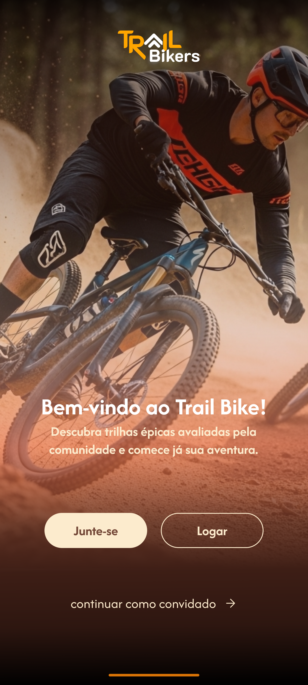
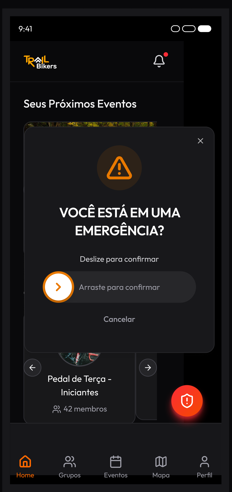
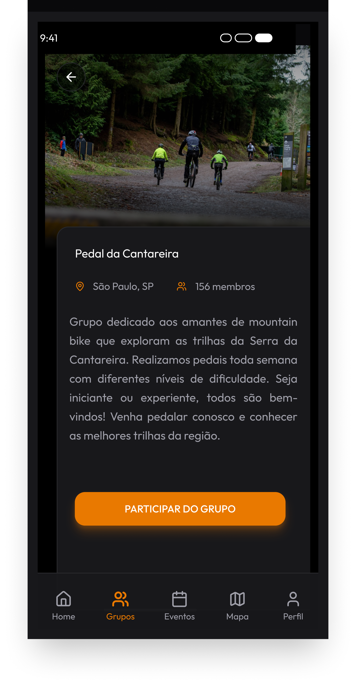
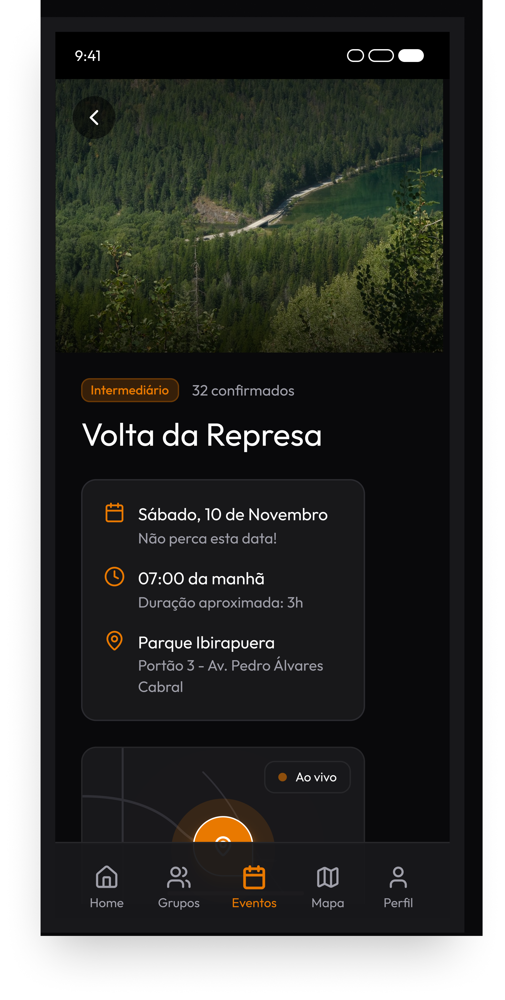

Quem pedala longe pedala com medo
App mobile de segurança e comunidade para ciclistas de trilha. Do desk research ao teste com usuários — estudo de caso da minha pós-graduação em UX.
Ver Protótipo
- Tipo
- Produto mobile — protótipo de alta fidelidade
- Meu papel
- Pesquisa, ideação, UI, protótipo e testes
- Ferramentas
- Figma, Crazy 8's, Matriz de Priorização
- Validação
- 5 testes presenciais, 3 tarefas, 100% de conclusão
Ferramenta certa, contexto errado
Strava e Wikiloc foram feitos para performance e acervo de rotas. O ciclista de trilha está longe do asfalto, muitas vezes sem sinal, e sem forma simples de pedir ajuda se cair.
Segurança antes de engajamento
Três funcionalidades, não trinta: botão de pânico, grupos de pedal e eventos. Gamificação — o item mais fácil de vender — ficou de fora para proteger o foco.
Validado e já com a próxima iteração mapeada
Os cinco usuários concluíram as três tarefas. O teste expôs quatro pontos de fricção, sendo um grave: o botão de emergência funcionava, mas não avisava que estava funcionando.



Como cheguei nesse recorte
Comecei por desk research: relatórios de mercado, fóruns e avaliações dos apps concorrentes na App Store e no Google Play. Três reclamações se repetiam — mapa que não carrega sem sinal, impossibilidade de pedir ajuda em local isolado, e grupo de WhatsApp caótico para organizar pedal.
Isso virou a proto-persona Ricardo, 34 anos, que passou a ser o critério de decisão do projeto: ideia bonita que não resolvia uma dor dele, caía.
Onde os concorrentes não olham
| Funcionalidade | Strava | Wikiloc | Oportunidade |
|---|---|---|---|
| Mapas offline confiáveis | Pago e limitado | Pago | Alta |
| Botão de pânico | Pago e complexo | Fraco | Alta |
| Eventos e grupos locais | Fraco | Fraco | Alta |
| Condição da trilha pela comunidade | — | Fraco | Alta |
| GPS integrado | Forte | Forte | Requisito básico |
Eles competem em performance e acervo de rotas. Segurança e comunidade local ficaram descobertas — foi por essa brecha que o projeto entrou.
Por que a gamificação ficou de fora
A ideação usou Crazy 8's — oito esboços em oito minutos, com cronômetro, para impedir apego à primeira ideia. Depois veio a matriz de impacto contra esforço.
Pontos e medalhas engajam, aparecem em todo concorrente e seriam o item mais fácil de mostrar numa apresentação. Mas custariam caro em complexidade e desviariam o foco do que o MVP precisava provar: que o app deixa o ciclista mais seguro. Foram eliminados.
A paleta e o porquê do laranja
Regra de proporção 60/30/10 com tipografia Outfit. O laranja não é escolha estética: é a cor associada a atenção e alerta, e precisa ser reconhecida por alguém cansado, no meio do mato, possivelmente em pânico.
Cinco pessoas quebrando o protótipo
Cinco testes presenciais com protocolo Think Aloud. Todos concluíram as tarefas — o que valida a proposta. Mas o que interessa num teste não é o que funcionou.
No "segure para confirmar", ninguém sabia se a contagem tinha começado. Num fluxo de emergência, essa dúvida é inaceitável — e só apareceu porque alguém de verdade colocou o dedo na tela.
Os quatro pontos de fricção encontrados
O botão não dizia que estava contando
Violação direta da primeira heurística de Nielsen: visibilidade do status do sistema.
"Eu estou apertando... já foi? Tenho que soltar?"
E depois que o alerta sai?
Os usuários não sabiam se podiam guardar o celular ou se fechar o app cancelaria o pedido de socorro.
"Ok, enviou. E agora? Posso mexer no celular ou isso cancela?"
Grupo e evento pareciam a mesma coisa
Dois dos cinco não distinguiram as seções. Grupo é comunidade permanente, evento tem data — a interface não deixava isso evidente sozinha.
Ninguém viu o filtro
Três usuários rolaram a lista inteira sem perceber o ícone no topo. Ícone sozinho, sem rótulo, some.
Barato agora, caro depois
Corrigir feedback visual num protótipo do Figma custa uma tarde. Descobrir o mesmo problema com o app publicado custa um ciclo inteiro de desenvolvimento — e, num app de segurança, custa a confiança de quem estava contando com ele.
É por isso que eu testo antes de escrever código. A próxima iteração já tem escopo definido: indicador de progresso no botão, tela de estado pós-alerta e rótulo junto ao ícone de filtro.
Outros projetos
Este é o lado de pesquisa e produto. O case do CEDESP mostra o mesmo processo levado até o código, rodando em produção.
Sistema de gestão CEDESP
Matrícula, turmas, frequência e relatórios num cadastro único. React + Firebase, em produção.
UX + Front-end Ver o caserivaux.com.br
Este site: HTML, CSS e JavaScript puros, animações em GSAP e publicação na Vercel.
Front-endFormação em tecnologia
Material didático e aulas de criação de páginas web, com mais de 15 anos de sala.
Educação